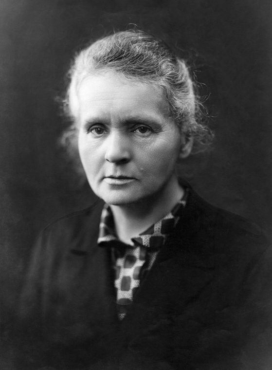
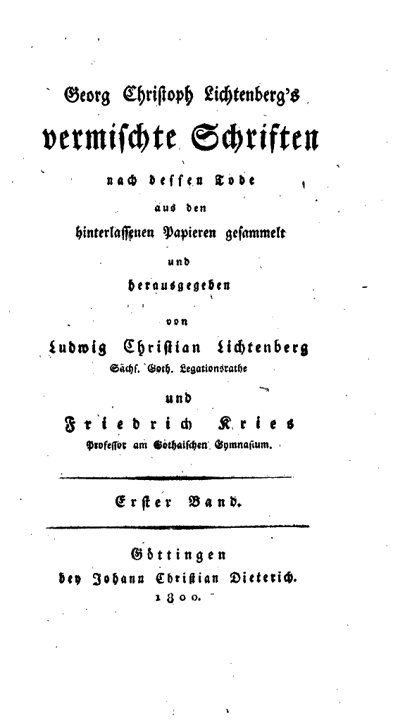
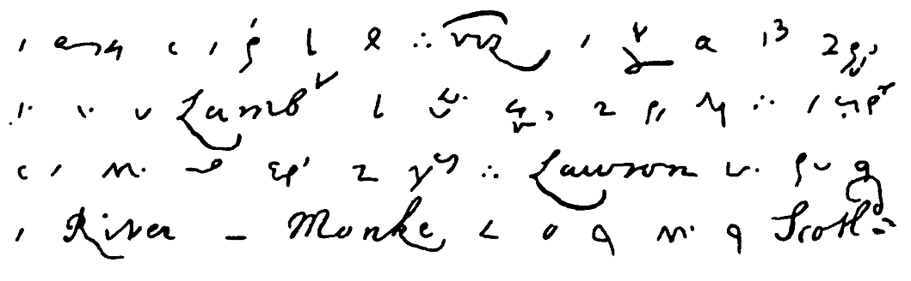
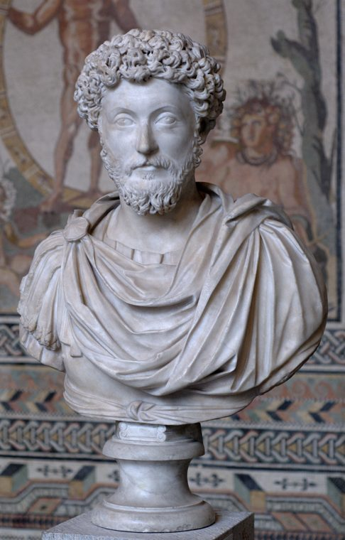

Most people keep one notebook or none. One is too few. It forces every kind of thinking into a single container — the meeting note next to the private fear next to the reading excerpt next to the half-formed idea that needs silence to develop. The result is a notebook that serves every purpose and masters none, which is another way of saying it masters nothing at all.
The alternative is old and tested. For at least four centuries, serious writers, scientists, and thinkers have kept multiple notebooks, each with a distinct job. The categories have been named differently across eras and traditions, but the underlying structure is stable. Five types cover everything a working mind produces. Each one solves a specific problem. Each one has a precedent that predates the internet by centuries, and each one addresses a failure that digital tools have made worse.
✦ ✦ ✦1 The Commonplace Book
You read constantly and retain almost nothing.
In 1685, John Locke published Méthode nouvelle de dresser des recueils, a manual on how to keep a commonplace book. The English translation appeared a year after his death, in 1706: A New Method of Making Common-Place-Books. Locke had spent 25 years developing the system before he described it. His method: a bound volume of blank pages, an alphabetical index at the front using a system of first letters and first vowels, and one rule — on the second reading of a book, copy only the passages that add something new to your understanding. Not sentences that sound good. Sentences that teach. Jonathan Swift, in 1721, put it plainly: a commonplace book was something “a provident poet cannot subsist without, for this proverbial reason, that great wits have short memories.”
The practice was standard among educated people for three centuries. Milton kept one. Jefferson maintained his throughout his presidency. The purpose across all of them was the same: to make reading permanent. A passage, once copied by hand, is no longer the author's property. It has been selected, compressed, physically written, and placed alongside every other passage you considered worth owning. Over years, the commonplace book becomes a private encyclopedia of what you actually know, as distinct from what you have merely read.
The modern failure here is worse than Locke's. We read articles, threads, newsletters, research papers, and half-finished books across five devices, and we retain close to nothing from any of them. The notes app stores the bookmark. The commonplace book stores the understanding — and storage was never the part that was hard. Copying by hand is slow on purpose; the slowness is where the reading turns into thinking on the page.
2 The Project Notebook
Your project thinking is scattered across seven tools and your head.

Marie Curie's laboratory notebooks sit in lead-lined boxes at the Bibliothèque Nationale de France in Paris. They are contaminated with radium-226, which has a half-life of 1,600 years. Visitors who want to read them sign a liability waiver and wear protective clothing. The notebooks will not be safe to handle unprotected until approximately the year 3500.
What those pages contain is a complete record of Curie's experimental reasoning — every measurement, every failed approach, every recalculation — across the work that led to the discovery of polonium and radium. The notebooks are dangerous because Curie carried radioactive materials in her pockets. They are invaluable because she kept everything in one place, and that one place is the only reason the reasoning behind her discoveries survived intact.
The project notebook gives a single endeavor its own dedicated space. One notebook, one project. The product launch gets its own. The manuscript, the business plan, the renovation, the research question — each one gets a container where every related thought lives together, in sequence, in the order it was produced.
The modern failure this addresses is dispersion. Project context in 2026 lives in Slack, Notion, email, Google Docs, Figma comments, and the voice memo you recorded in a taxi. Reassembling the full state of a project from these sources is an act of archaeology. The project notebook keeps the thread in one physical location. When you sit down to think about the project, you open the notebook and your previous thinking is there, in your handwriting, ready to be continued. The cost of resumption drops to almost nothing, which is the point, because resumption is where most projects quietly die.
3 The Waste Book
You edit before you generate. You filter before you think.

Georg Christoph Lichtenberg was a physicist at the University of Göttingen — the man who, in 1777, discovered the principle behind modern xerographic copying. From 1765 until his death in 1799, he kept notebooks he called Sudelbücher, borrowing the term from English accounting: the “waste book” was the ledger where merchants recorded every transaction as it happened, unsorted, before entries were cleaned up and transferred to the formal accounts.
Lichtenberg filled eleven volumes, labelled A through L. They contain 1,085 aphorisms, scientific observations, sketches, linguistic experiments, personal reflections, and notes for work he never started — all uncategorised, in no particular order. He never intended them for publication. They were published after his death between 1800 and 1806, and they became his most celebrated work, praised by Schopenhauer and quoted at length by Nietzsche. Wittgenstein considered Lichtenberg a model for how philosophical writing should feel.
Write everything, sort nothing. The material is waste until it proves otherwise.
That single rule eliminates the most destructive habit in note-taking: the unconscious assessment, before the pen touches the page, of whether the thought is worth writing down. The waste book removes the assessment. Everything goes in. The sorting happens later, in a different notebook, in a different frame of mind.
Digital tools have made this worse. They encourage categorisation at the moment of creation — the folder, the tag, the project, the label. The waste book refuses all of it. For anyone whose thinking has stalled because every thought has to justify its existence before reaching the page, it is the notebook where justification is not required — only presence. It is the same permission behind never organising your notebook.
4 The Daily Log
You have no data on your own life.

Samuel Pepys began his diary on 1 January 1660 and wrote in it every day for nearly ten years. It is now considered one of the most important documents of 17th-century English life. In the Great Fire entries of September 1666, Pepys recorded details that no other source preserved: scorched pigeons falling from the sky, people flinging belongings into the Thames, glass melted and buckled by the heat, and his decision — practical, urgent, and faintly absurd — to bury a round of parmesan cheese in his garden to save it from the flames.
His editor Robert Latham described the writing style as “impressions of the moment, without much respect for formal grammar.” The daily log is not a journal in the confessional sense. It is a record of what happened and what was noticed. The meeting. The weather. A sentence someone said that lodged in the mind for reasons you could not explain at the time. What you ate. What you read. What shifted.
The modern absence here is startling in its specificity. You track your steps, your sleep, your screen time — quantified, automatic, ambient. But you have no record of what you thought on a Tuesday three weeks ago. You cannot identify which week last month was the one where the project changed direction, or why. The daily log takes five minutes at the end of the day — the same small, repeatable unit behind two lines every day. A few sentences. The date and whatever needs to be set down before sleep rewrites the memory. Over months, it becomes the only document that shows you the shape of your own time — and the shape, once visible, is almost always a surprise.
5 The Corebook
You forget what you believe under pressure.

Marcus Aurelius wrote his Meditations between 170 and 180 CE, during the last decade of his life, while governing a Roman Empire at war on multiple fronts. The original Greek title — Ta eis heauton, “things to himself” — tells you everything about the audience. He was the only reader. The twelve books contain commands he gave himself, arguments he needed to win against his own impulses, and principles he had already accepted but kept forgetting under the weight of the office. He was not exploring ideas. He was anchoring them.
Pierre Hadot, in The Inner Citadel (1998), argued that Marcus was practising a specific Stoic discipline: the repeated writing of philosophical principles as a way of keeping them active in the mind when pressure made them easy to abandon. Holding a belief and living by it are different acts. The second one requires rehearsal, and the notebook was where the rehearsal took place.
The Corebook is the modern form of this. It is the notebook where you write what you believe — your ethics, the work you will do, the work you will refuse, the kind of person you are trying to remain. It is not aspirational. It is not a list of goals or a vision for the future. It is a record of decisions already made, written down so that when the pressure arrives — the offer that pays well but sits wrong, the shortcut no one would notice, the drift that happens slowly enough to be invisible until you are someone you did not agree to become — you have a document to return to.
The Corebook is last because it governs the other four. The commonplace book tells you what you know. The project notebook tells you what you are building. The waste book tells you what you are thinking. The daily log tells you what you did. The Corebook tells you who you are. Without it, the other four are productive but directionless — busy notebooks belonging to a person who has lost the thread of why the busyness matters. With the Corebook, they have a compass.
✦ ✦ ✦Five notebooks. Five jobs. Each one solves a problem that a notes app cannot, because the problem was never storage. The problem was always the relationship between the mind and the page — whether the page is for processed knowledge, focused project work, unfiltered generation, daily observation, or the beliefs that hold everything else in place.
Keep all five. Use them separately. The separateness is the system.
References
- Locke, J. (1706). A New Method of Making Common-Place-Books. London: J. Greenwood.
- Swift, J. (1721). “A Letter of Advice to a Young Poet.”
- Curie, M. Laboratory notebooks, Bibliothèque Nationale de France, Paris.
- Lichtenberg, G.C. (2000). The Waste Books. Trans. R.J. Hollingdale. New York Review of Books.
- Pepys, S. (1660–1669). The Diary of Samuel Pepys. Ed. Robert Latham & William Matthews. University of California Press.
- Marcus Aurelius. (c. 170–180 CE). Meditations (Ta eis heauton).
- Hadot, P. (1998). The Inner Citadel: Meditations of Marcus Aurelius. Trans. Michael Chase. Harvard University Press.